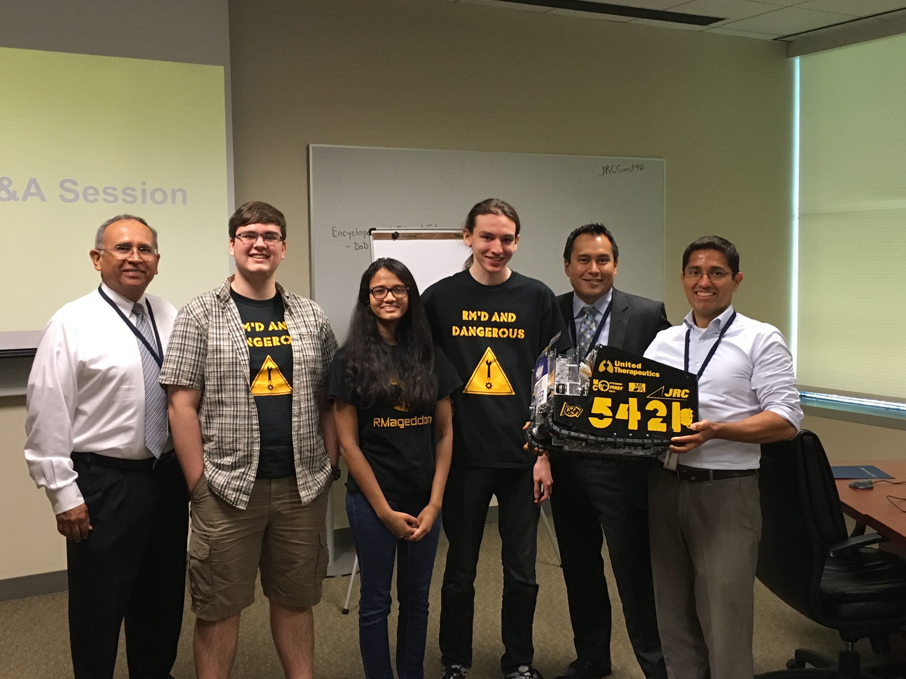
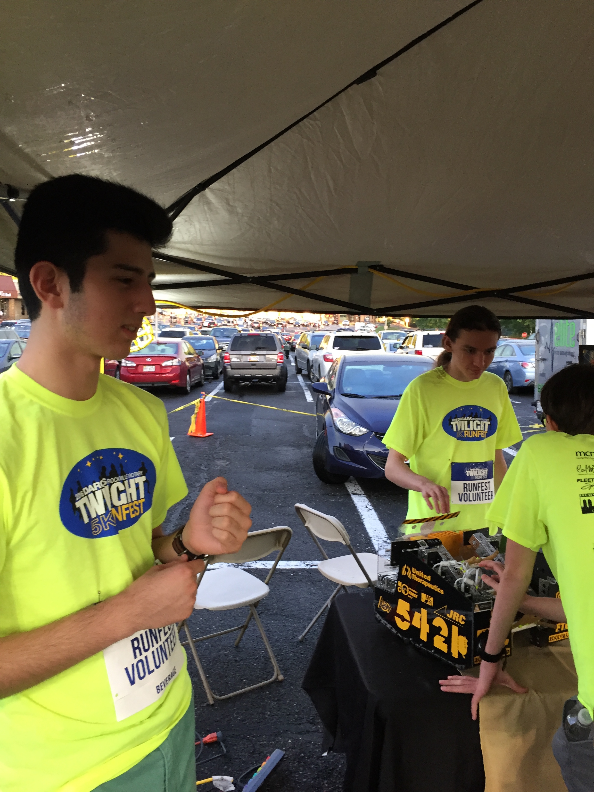

Blog
Visit to JRC Integrated Systems
Today, we were honored to present the results of the FIRST RES-Q season to one of our largest sponsors, JRC Integrated Systems. JRC is a service company that provides expertise in scientific fields (specifically naval engineering) to the Department of Defense, and is one of RM Robotics’ longest-supporting sponsors.
Following a recap of the FIRST RES-Q season’s successes, we demonstrated this season’s award-winning robot to JRC employees, as well as explained its’ unique features and custom-milled parts. The importance of FIRST and community outreach was at the forefront of our presentation.
We also learned about revolutions within the 3D printing field in use at JRC Integrated Systems. JRC Integrated Systems uses a top-of-the-line 3D printer to prototype scale models of parts. After printing in two different colors of filaments, the scale model is immersed in a chemical bath to dissolve the support filament, ensuring high quality results with few overhangs or errors in the final print.
Thank you to Peter Maldonado, Ryan Utz, and Anika Yardi (RM Robotics’ first Dean’s List Winner!) for the presentation, and special thanks to Jaime for his work communicating with RM Robotics to support our long-standing sponsorship. We look forward to holding demonstrations and learning about industry-standard machinery with the engineering community.
Twilight Rockville Rotary Runfest Recap
The Rockville Rotary Club recently hosted its’ annual Twilight Rotary Run 5K, and despite the rainy weather, the event was an overwhelming success! The run is used as a funraiser for Rockville Rotary Club and RM Robotics was glad to contribute.
One of RM Robotics’ largest and longest-supporting sponsors is the Rockville Rotary Club, a club that provides financial assistance toward charitable and educational programs. The Twilight Rotary Runfest is just one of the few ways the Rockville Rotary Club raises funds to provide these donations.
We demonstrated the harvesting capabilities of our robot as well as provided information about FIRST within the Maryland area, in order to increase involvement in these programs. A little rain never hurt the robot! (Disclaimer, please don’t test that)
We look forward to future demonstrations with the Rockville Rotary Club and supporting the events of our sponsors. Thank you to all the members of RM Robotics who came out, and the Rockville Rotary Club for their continued charitable sponsorship.
FTC East Super-Regional Update
Thank you to everyone for the great support shown throughout the season and the FTC East Super-Regionals. RM’d and Dangerous broke an astonishing number of milestones, and proved their mettle against a tough playing field.
At the end of the first day, RM’d and Dangerous went 6-2 in the qualifying rounds, ranking 4th out of all teams on the East Coast, and posting an impressive high score of 428 with FTC 8221 Cubix^3, 138 points shy of the world record of 566 points set at the competition. The second day ended with a 6-3 match record, securing their spot in 8th place.
Unfortunately, they were one match shy of guaranteeing a spot at the World Championships in St. Louis, hence ending the 2015-2016 FIRST RES-Q season for RM Robotics. This is not the end of the road for us, as we still have plenty more updates for off-season activities regarding local outreach, government advocacy, and demonstrations for FIRST and the engineering community.

Thank you to all of our supporters (especially our sponsors)! RM’d and Dangerous and RMageddon will come back this fall for a stronger season with a mountainous new challenge to tackle.
RM Robotics @ MD State Championship
This year, both RM Robotics teams were able to qualify for the Maryland State Championships. Through an exhilarating day, both teams walked away with some impressive accomplishments.
FTC 5421 RM’d and Dangerous ended the day as the 1st pick of the finalist alliance in the Hubble Division, after a tight finals series that went to three matches. Thank you to our alliance members, FTC 9799 Ingenerds and FTC 4451 Iteration Infinity for making this a great alliance!
FTC 8121 RMageddon had a bit of a rough start, but secured a spot in the semifinals of the Goddard Division as a 2nd pick for an alliance with FTC 6029 Team Robowiz and FTC 7182 Mechanical Paradox.
RM’d and Dangerous also walked away with some sweet hardware, in the form of the 2nd Place Promote Award, the Connect Award, and the 3rd Place Inspire Award, guaranteeing them a spot at the FTC East Super-Regionals from March 18-20, 2016.

Beyond this, Anika Yardi from RMageddon and Peter Maldonado from RM’d and Dangerous secured spots as Dean’s List finalists for the FIRST RES-Q season.

Congratulations to both teams, and wish us the best of luck at the Pennsylvania State Championships on February 27, 2016!
FTC 5421 Promote Video 2016
Take a look at RM'd and Dangerous' FIRST RES-Q Promote Award video submission for this year's theme "Now that I've succeeded in FIRST..."!
Results from the Weekend at Bullis School
This weekend, RM Robotics had a hefty challenge ahead of them. RM’d and Dangerous competed at the Montgomery1 Qualifier on January 16. The very next day, RM Robotics hosted the student-run and led Montgomery2 Qualifier at the Bullis School.
We’re glad to say that this was a very successful weekend! At the Montgomery1 Qualifier, RM’d and Dangerous rocketed through the elimination matches to score their first ever Winning Alliance award, working with alliance captain FTC 7182 Mechanical Paradox and 2nd pick FTC 6417 Blu Cru. Capped off with a slew of honors, including 2nd place in the Motivate, Connect, Innovate, and Think categories, as well as the prestigious Inspire award, RM’d and Dangerous secured a berth at the Maryland State Championships on February 20, 2016. Congratulations to the alliance!
Following their inaugural success, RM Robotics hosted the Montgomery2 qualifier that surprisingly ended on time! Every member of the RM Robotics crew filled crucial positions to ensure the qualifier worked smoothly; special thanks to Sunil Tohan for organizing the qualifier, Peter Maldonado for acting as Control Systems Advisor, Ryan Utz for his work as Hardware Inspector and Field Reset, Kyle Zhu, Theo Goltzman, and Kameron Hnath for their work as referees, and the Richard Montgomery High School National Honors Society for some much needed manpower to run the event.


Wish us luck at the Howard1 and Howard2 Qualifiers, where RM’d and Dangerous and RMageddon will be competing to test out their robots before the Maryland State Championship, and hopefully win some hardware!
FIRST RES-Q Kickoff
It’s here! The new challenge has been released, and it looks like a doozy! Between the mountain structure, debris harvesting, and hanging, this might be FIRST’s toughest challenge yet!
RM Robotics had a great time at Capitol College for the Maryland FTC Kickoff. From learning about part fabrication and wiring with the new control system, to the pizza break after the game release, there was a lot of knowledge and fun circulating the facility today!
We also got the chance to impart some of our own wisdom to teams, through presentations on Competition Day, Github, and Judging (hosted on this website under the Resources page), as well as a unique “Ask a Veteran Team Anything” panel, including members from FTC 5421 RM’d and Dangerous.
We can’t wait to see the unique designs that teams come up with throughout the season. Have fun, and remember your gracious professionalism!